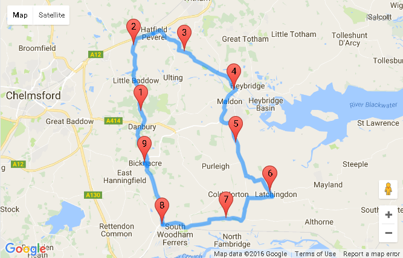

Path Planning

We are finding the shortest path that passes through a series of coordinates in preparation for similar problems that organizations may face, such as optimizing food drive collections.
Data Visualizations

We are analyzing datasets to generate intuitive visualizations to raise awareness for social issues in our community.